import matplotlib.pyplot as plt
import pandas as pd
import scipy.stats as stats
import seaborn as sns
import statsmodels.formula.api as smfPython training (4 of 4): statistics and further visualisation
This session is aimed as an overview of how to perform some statistical modelling with Python. It is a Python workshop, not a statistics workshop - if you’d like to better understand the statistical models, or need help deciding what’s best for you, please consult a statistics resource or contact a statistician.
In this session, we’ll cover
- Descriptive statistics
- Measures of central tendancy
- Measures of variability
- Measures of correlation
- Inferential statistics
- Linear regressions
- T-tests
- \(\chi^2\) tests
- Generalised regressions
- Visualising statistics
- Adding lines to graphs to indicate bounds
- Shading regions
- Subplots
- Boxplots
We’ll use two new modules: - scipy.stats - statsmodels
Setup
Jupyter notebooks
As with last week, we’re going to work from a Jupyter notebook.
Opening Jupyter
If you installed Spyder via Anaconda
Then you’ve already got it! Open the application “Jupyter” on your computer. Alternatively, open a command prompt / shell and type jupyter notebook.
If you installed Spyder manually
Then you’ll probably need to get it. The simplest way is via a pip install.
- Open a command prompt / shell
- Type
pip install jupyterlab - Once it’s finished, type
jupyter notebookin your shell
If you can’t install it
If you’re having issues with the installation, can’t get it to work or don’t want to, you can use Google Colab instead. Just sign in with your Google account and you gain access to a cloud-hosted notebook. Note that everything will save to your Google Drive.
Creating a notebook
Once you’ve opened Jupyter/Colab,
- Navigate to a folder on your computer where you’d like to save today’s files. We suggest the project folder you’ve been using for the past two sessions.
- Press
New->Notebookto create your notebook. Select Python3 when prompted.
Using notebooks
The fundamental building block of jupyter notebooks is the cell. This is the block you can currently write in:

I can type Python code into this cell and run it. I can also change it to markdown to type formatted code.
Modules and Data
Let’s import all our modules for today:
We’ll be working from our “Players2024” dataset again. If you don’t have it yet,
- Download the dataset.
- Create a folder in in the same location as your script called “data”.
- Save the dataset there.
To bring it in and clean it up,
df = pd.read_csv("data/Players2024.csv")
df = df[df["positions"] != "Missing"]
df = df[df["height_cm"] > 100]Descriptive Statistics
We’ll start with sample size. All dataframes have most descriptive statistics functions available right off the bat which we access via the . operator.
To calculate the number of non-empty observations in a column, say the numeric variable df["height_cm"], we use the .count() method
df["height_cm"].count()5932Measures of central tendancy
We can compute measures of central tendancy similarly. The average value is given by
df["height_cm"].mean()183.04130141604855the median by
df["height_cm"].median()183.0and the mode by
df["height_cm"].mode()0 185.0
Name: height_cm, dtype: float64
.mode()returns a dataframe with the most frequent values as there can be multiple.
Visualisation
Let’s visualise our statistics as we go. We can start by producing a histogram of the heights with seaborn:
sns.displot(df["height_cm"], binwidth = 1)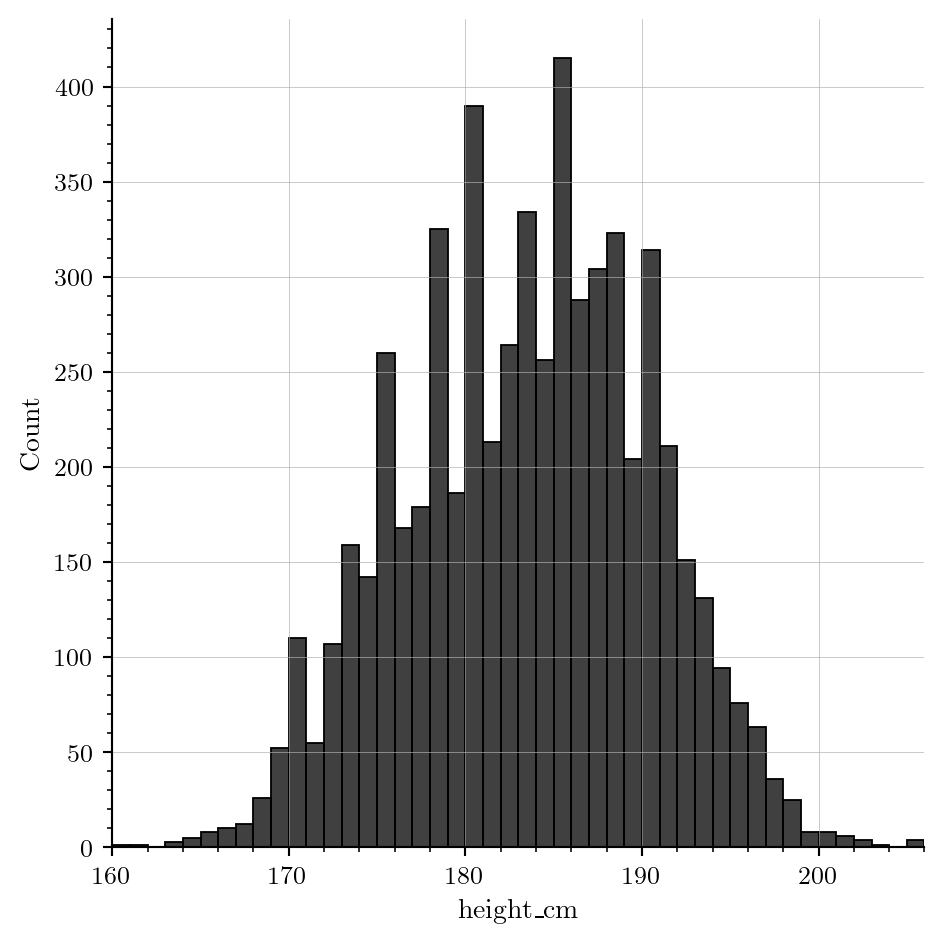
We can use matplotlib to annotate the locations of these statistics. Let’s save them into variables and then make the plot again. The important function is plt.vlines, which enables you to create vertical line(s) on your plot. We’ll do it once for each so that we get separate legend entries. We’ll need to provide the parameters
x =ymin =ymax =colors =linestyles =label =
# Save the statistics
height_avg = df["height_cm"].mean()
height_med = df["height_cm"].median()
height_mod = df["height_cm"].mode()
# Make the histogram
sns.displot(df["height_cm"], binwidth = 1)
# Annotate the plot with vertical and horizontal lines
plt.vlines(x = height_avg, ymin = 0, ymax = 500, colors = "r", linestyles = "dashed", label = "Average")
plt.vlines(x = height_med, ymin = 0, ymax = 500, colors = "k", linestyles = "dotted", label = "Median")
plt.vlines(x = height_mod, ymin = 0, ymax = 500, colors = "orange", linestyles = "solid", label = "Mode")
# Create the legend with the labels
plt.legend()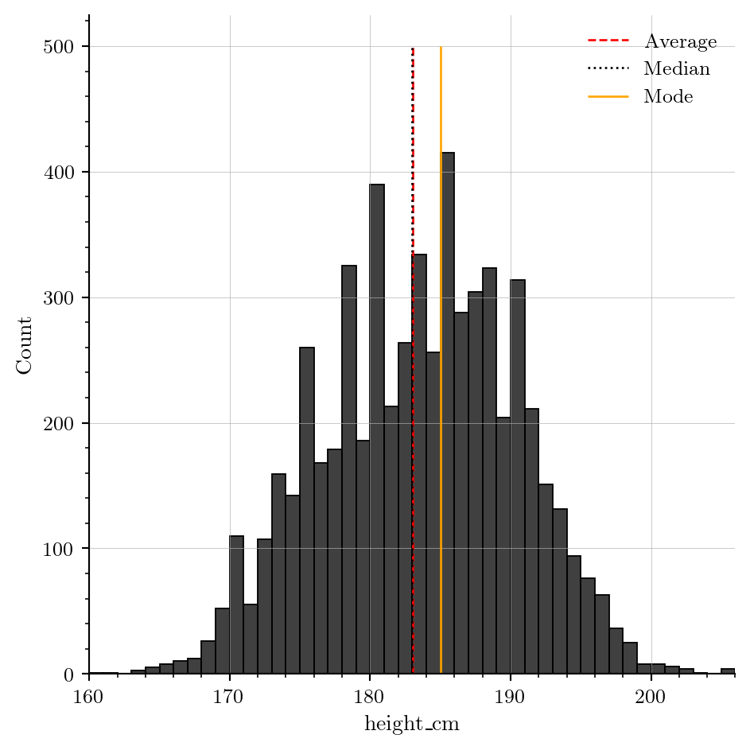
Measures of variance
We can also compute measures of variance. The minimum and maximum are as expected
df["height_cm"].min()
df["height_cm"].max()206.0The range is the difference
df["height_cm"].max() - df["height_cm"].min()46.0Quantiles are given by .quantile(...) with the fraction inside. The inter-quartile range (IQR) is the difference between 25% and 75%.
q1 = df["height_cm"].quantile(0.25)
q3 = df["height_cm"].quantile(0.75)
IQR = q3 - q1A column’s standard deviation and variance are given by
df["height_cm"].std()
df["height_cm"].var()46.7683158241558And the standard error of the mean (SEM) with
df["height_cm"].sem()0.08879229764682213You can calculate the skewness and kurtosis (variation of tails) of a sample with
df["height_cm"].skew()
df["height_cm"].kurt()-0.4338044567190438All together, you can see a nice statistical summary with
df["height_cm"].describe()count 5932.000000
mean 183.041301
std 6.838736
min 160.000000
25% 178.000000
50% 183.000000
75% 188.000000
max 206.000000
Name: height_cm, dtype: float64Visualisation
Let’s take our previous visualisation and shade in the IQR and standard deviations. We’ll need to save the IQR and then use the plt.fill_between() function with the parameters
x =y1 =y2 =alpha =(for the opacity)label =
# Save the statistics
height_tot = df["height_cm"].count()
height_avg = df["height_cm"].mean()
height_med = df["height_cm"].median()
height_mod = df["height_cm"].mode()
# Save the quartiles as well
height_Q1 = df["height_cm"].quantile(0.25)
height_Q3 = df["height_cm"].quantile(0.75)
# Make the histogram
sns.displot(df["height_cm"], binwidth = 1)
# Annotate the plot with vertical and horizontal lines
plt.vlines(x = height_avg, ymin = 0, ymax = 500, colors = "r", linestyles = "dashed", label = "Average")
plt.vlines(x = height_med, ymin = 0, ymax = 500, colors = "k", linestyles = "dotted", label = "Median")
plt.vlines(x = height_mod, ymin = 0, ymax = 500, colors = "orange", linestyles = "solid", label = "Mode")
# Shade in the IQR
plt.fill_between(x = [height_Q1, height_Q3], y1 = 0, y2 = 500, alpha = 0.2, label = "IQR")
# Create the legend with the labels
plt.legend()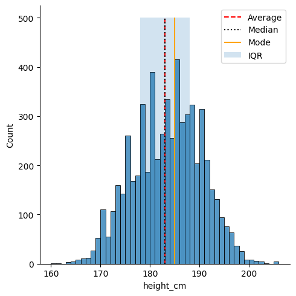
Measures of correlation
If you’ve got two numeric variables, you might want to examine covariance and correlation. These indicate how strongly the variables are linearly related. We’ll need to use the df["age"] variable as well.
The covariance between “height_cm” and “age” is
df["height_cm"].cov(df["age"])0.5126608276592359The
.cov()function compares the column it’s attached to (heredf["height_cm"]) with the column you input (heredf["age"]). This means we could swap the columns without issue:
{python} df["age"].cov(df["height_cm"])
Similarly, we can find the Pearson correlation coefficient between two columns.
df["height_cm"].corr(df["age"])0.01682597901197303You can also specify “kendall” or “spearman” for their respective correlation coefficients
df["height_cm"].corr(df["age"], method = "kendall")
df["height_cm"].corr(df["age"], method = "spearman")0.007604345289158663Reminder about groupbys
Before we move to inferential statistics, it’s worth reiterating the power of groupbys discussed in the second workshop.
To group by a specific variable, like “positions”, we use
gb = df.groupby("positions")By applying our statistics to the gb object, we’ll apply them to every variable for each position. Note that we should specify numeric_only = True, because these statistics won’t work for non-numeric variables
averages = gb.mean(numeric_only = True)
averages| height_cm | age | |
|---|---|---|
| positions | ||
| Attack | 180.802673 | 25.061108 |
| Defender | 184.193269 | 25.716471 |
| Goalkeeper | 190.668508 | 26.587017 |
| Midfield | 180.497017 | 25.201671 |
Visualisation
Let’s visualise these two results. We’ll look at creating linear regressions a bit later, so for now we’ll instead look at how matplotlib lets us combine three separate plots into a single figure.
Because we’re creating multiple plots, we’ll need to use the axes-level interface. This means using sns.scatterplot instead of sns.relplot etc.
For our first one, we’ll just do a scatterplot between the age and height variables:
sns.scatterplot(df, x = "age", y = "height_cm")
Next, we’ll make a bars plot of the average heights and ages per position from our group by object
sns.barplot(averages, x = "positions", y = "height_cm")sns.barplot(averages, x = "positions", y = "age")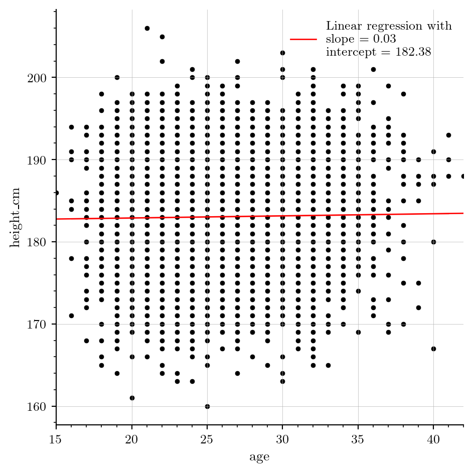
Finally, we need to use the plt.subplot() function to bring them all together.
It works a bit weirdly. Each time we make a plot, we call it first, telling matplotlib that we’re making a new plot at a new index. It looks like plt.subplot(nrows, ncols, index), so if we want a \(1 \times 3\) figure, we’ll go
plt.subplot(1, 3, 1)
# Plot 1
plt.subplot(1, 3, 2)
# Plot 2
plt.subplot(1, 3, 3)
# Plot 3plt.subplot(1, 3, 1)
sns.scatterplot(df, x = "age", y = "height_cm")
plt.subplot(1, 3, 2)
sns.barplot(averages, x = "positions", y = "height_cm")
plt.subplot(1, 3, 3)
sns.barplot(averages, x = "positions", y = "age")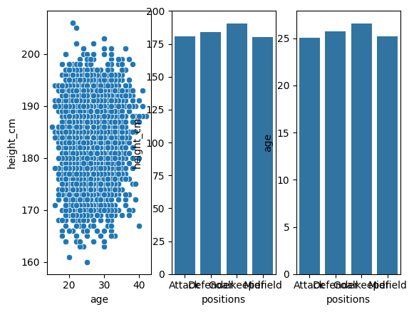
We can change the dimensions of our figure by using the plt.subplots(...) (notice the plural s) to preconfigure the settings for our plot
plt.subplots(1, 3, tight_layout = True, figsize = (12,4))
plt.subplot(1, 3, 1)
sns.scatterplot(df, x = "age", y = "height_cm")
plt.subplot(1, 3, 2)
sns.barplot(averages, x = "positions", y = "height_cm")
plt.subplot(1, 3, 3)
sns.barplot(averages, x = "positions", y = "age")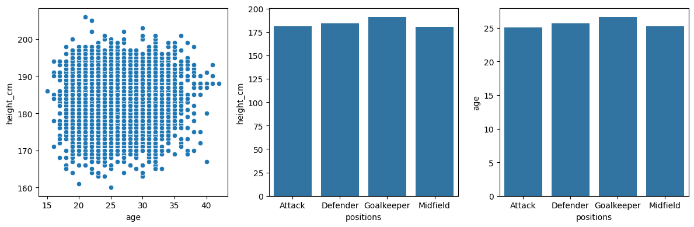
Inferential Statistics
Inferential statistics requires using the module scipy.stats.
Simple linear regressions
Least-squares regression for two sets of measurements can be performed with the function stats.linregress()”
stats.linregress(x = df["age"], y = df["height_cm"])LinregressResult(slope=0.02582749476456191, intercept=182.38260451315895, rvalue=0.01682597901197303, pvalue=0.19506275453364208, stderr=0.01993026652960195, intercept_stderr=0.515991957177263)If we store this as a variable, we can access the different values with the . operator. For example, the p-value is
lm = stats.linregress(x = df["age"], y = df["height_cm"])
lm.pvalue0.19506275453364208Visualisation
Let’s look at implementing the linear regression into our scatter plot from before. Using the scatterplot from before,
sns.relplot(data = df, x = "age", y = "height_cm")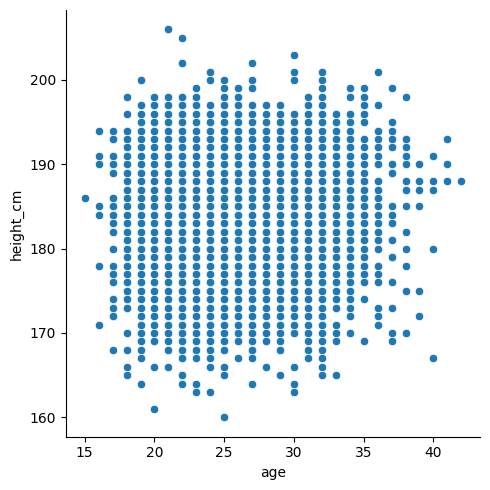
we’ll need to plot the regression as a line. For reference,
\[ y = \text{slope}\times x + \text{intercept}\]
So
sns.relplot(data = df, x = "age", y = "height_cm")
# Construct the linear regression
x_lm = df["age"]
y_lm = lm.slope*x_lm + lm.intercept
# Plot the line plot
sns.lineplot(x = x_lm, y = y_lm, color = "r")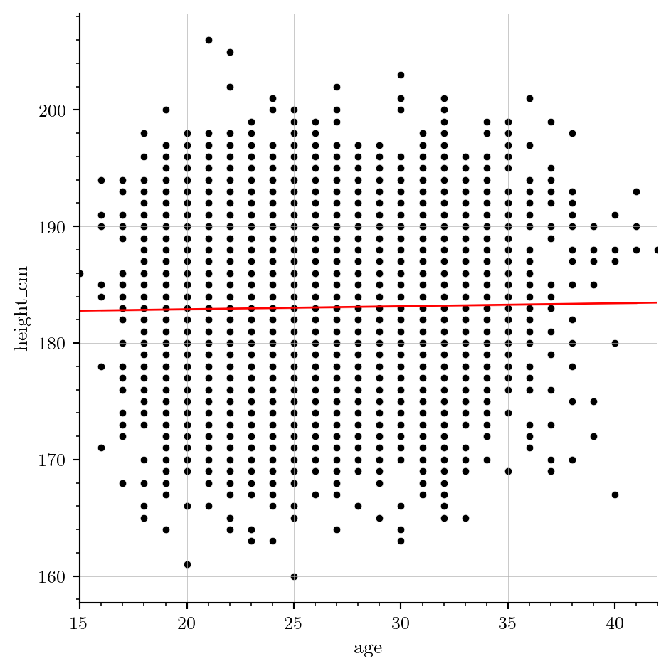
Finally, we can include the details of the linear regression in the legend by specifying them in the label. We’ll need to round() them and str() them (turn them into strings) so that we can include them in the message.
sns.relplot(data = df, x = "age", y = "height_cm")
# Construct the linear regression
x_lm = df["age"]
y_lm = lm.slope*x_lm + lm.intercept
# Round and stringify the values
slope_rounded = str(round(lm.slope, 2))
intercept_rounded = str(round(lm.intercept, 2))
# Plot the line plot
linreg_label = "Linear regression with\nslope = " + slope_rounded + "\nintercept = " + intercept_rounded
sns.lineplot(x = x_lm, y = y_lm, color = "r", label = linreg_label)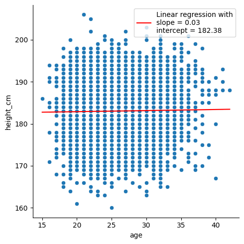
\(t\)-tests
We can also perform \(t\)-tests with the scipy.stats module. Typically, this is performed to examine the statistical signficance of a difference between two samples’ means. Let’s examine whether that earlier groupby result for is accurate for heights, specifically, are goalkeepers taller than non-goalkeepers?
The function stats.ttest_ind() requires us to send in the two groups as separate columns, so we’ll need to do a bit of reshaping.
Let’s start by creating a new variable for goalkeeper status, and then separate the goalkeepers from the non-goalkeepers in two variables
df["gk"] = df["positions"] == "Goalkeeper"
goalkeepers = df[df["gk"] == True]
non_goalkeepers = df[df["gk"] == False]The \(t\)-test for the means of two independent samples is given by
stats.ttest_ind(goalkeepers["height_cm"], non_goalkeepers["height_cm"])TtestResult(statistic=35.2144964816995, pvalue=7.551647917141636e-247, df=5930.0)Yielding a p-value of \(8\times 10^{-247}\approx 0\), indicating that the null-hypothesis (heights are the same) is extremely unlikely.
Visualisation
We can also visualise these results with boxplots, showing the distributions and their statistical summary. These demonstrate that there is clearly a significant different in the distributions:
sns.catplot(df, x = "gk", y = "height_cm", kind = "box")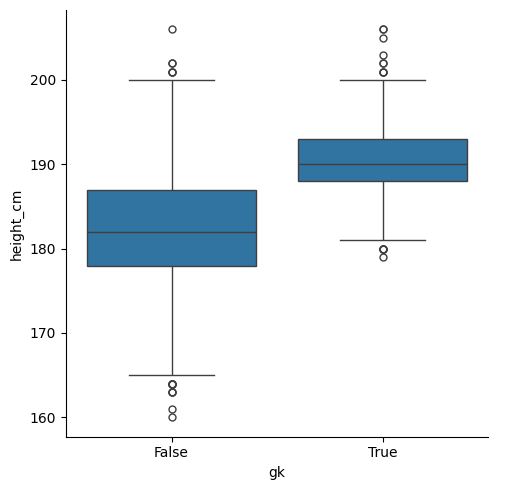
\(\chi^2\) tests
\(χ^2\) tests are useful for examining the relationship of categorical variables by comparing the frequencies of each. Often, you’d use this if you can make a contingency table.
We only have one useful categorical variable here, “positions” (the others have too many unique values), so we’ll need to create another. Let’s see if there’s a relationship between players’ positions and names with the letter “a”.
Make a binary column for players with the letter “a” in their names. To do this, we need to apply a string method to all the columns in the dataframe as follows
df["a_in_name"] = df["name"].str.contains("a")Let’s cross tabulate positions with this new column
a_vs_pos = pd.crosstab(df["positions"],df["a_in_name"])
print(a_vs_pos)a_in_name False True
positions
Attack 291 1280
Defender 355 1606
Goalkeeper 149 575
Midfield 312 1364The \(χ^2\) test’s job is to examine whether players’ positions depend on the presence of “a” in their name. To evaluate it we need to send the contingency table in:
stats.chi2_contingency(a_vs_pos)Chi2ContingencyResult(statistic=2.1808405074930404, pvalue=0.5357320466340116, dof=3, expected_freq=array([[ 293.17211733, 1277.82788267],
[ 365.9519555 , 1595.0480445 ],
[ 135.10923803, 588.89076197],
[ 312.76668914, 1363.23331086]]))More complex modelling
If you need to do more advanced statistics, particularly if you need more regressions, you’ll likely need to turn to a different package: statsmodels. It is particularly useful for statistical modelling.
We’ll go through three examples
- Simple linear regressions (like before)
- Multiple linear regressions
- Logistic regressions
What’s nice about statsmodels is that it gives an R-like interface and summaries.
Simple linear regressions revisited
Let’s perform the same linear regression as before, looking at the “age” and “height variables”. Our thinking is that players’ heights dictate how long they can play, so we’ll make \(x = \text{height}\) and \(y = \text{age}\).
The first step is to make the set up the variables. We’ll use the function smf.ols() for ordinary least squares. It takes in two imputs:
- The formula string, in the form
y ~ X1 + X2 ... - The data
We create the model and compute the fit
mod = smf.ols("height_cm ~ age", df)
res = mod.fit()Done! Let’s take a look at the results
res.summary()| Dep. Variable: | height_cm | R-squared: | 0.000 |
| Model: | OLS | Adj. R-squared: | 0.000 |
| Method: | Least Squares | F-statistic: | 1.679 |
| Date: | Mon, 24 Mar 2025 | Prob (F-statistic): | 0.195 |
| Time: | 14:25:57 | Log-Likelihood: | -19821. |
| No. Observations: | 5932 | AIC: | 3.965e+04 |
| Df Residuals: | 5930 | BIC: | 3.966e+04 |
| Df Model: | 1 | ||
| Covariance Type: | nonrobust |
| coef | std err | t | P>|t| | [0.025 | 0.975] | |
| Intercept | 182.3826 | 0.516 | 353.460 | 0.000 | 181.371 | 183.394 |
| age | 0.0258 | 0.020 | 1.296 | 0.195 | -0.013 | 0.065 |
| Omnibus: | 86.537 | Durbin-Watson: | 1.995 |
| Prob(Omnibus): | 0.000 | Jarque-Bera (JB): | 56.098 |
| Skew: | -0.098 | Prob(JB): | 6.58e-13 |
| Kurtosis: | 2.566 | Cond. No. | 151. |
Notes:
[1] Standard Errors assume that the covariance matrix of the errors is correctly specified.
That’s a lot nicer than with scipy. We can also make our plot from before by getting the model’s \(y\) values with res.fittedvalues
sns.relplot(data = df, x = "age", y = "height_cm")
sns.lineplot(x = df["age"], y = res.fittedvalues, color = "r")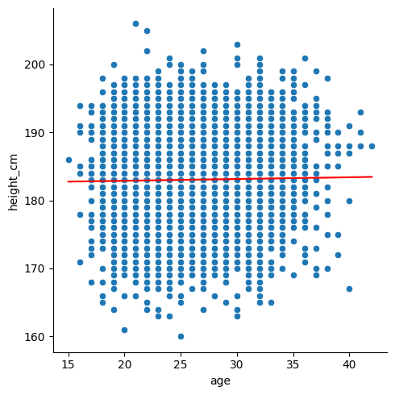
Generalised linear models
The statsmodels module has lots of advanced statistical models available. We’ll take a look at one more: Generalised Linear Models. The distributions they include are
- Binomial
- Poisson
- Negative Binomial
- Gaussian (Normal)
- Gamma
- Inverse Gaussian
- Tweedie
We’ll use the binomial option to create logistic regressions.
Logistic regressions examine the distribution of binary data. For us, we can compare the heights of goalkeepers vs non-goalkeepers again. Let’s convert our gk column from True \(\rightarrow\) 1 and False \(\rightarrow\) 0 by converting to an int:
df["gk"] = df["gk"].astype(int)Now, we can model this column with height. Specifically,
\[ \text{gk} \sim \text{height}\]
Start by making the model with the function smf.glm(). We need to specify the family of distributions; they all live in sm.families, which comes from a different submodule that we should import:
import statsmodels.api as sm
mod = smf.glm("gk ~ height_cm", data = df, family = sm.families.Binomial())Next, evaluate the results
res = mod.fit()Let’s have a look at the summary:
res.summary()| Dep. Variable: | gk | No. Observations: | 5932 |
| Model: | GLM | Df Residuals: | 5930 |
| Model Family: | Binomial | Df Model: | 1 |
| Link Function: | Logit | Scale: | 1.0000 |
| Method: | IRLS | Log-Likelihood: | -1583.5 |
| Date: | Mon, 24 Mar 2025 | Deviance: | 3167.0 |
| Time: | 14:25:58 | Pearson chi2: | 4.02e+03 |
| No. Iterations: | 7 | Pseudo R-squ. (CS): | 0.1879 |
| Covariance Type: | nonrobust |
| coef | std err | z | P>|z| | [0.025 | 0.975] | |
| Intercept | -53.2336 | 1.927 | -27.622 | 0.000 | -57.011 | -49.456 |
| height_cm | 0.2745 | 0.010 | 26.938 | 0.000 | 0.255 | 0.294 |
Finally, we can plot the result like before
sns.relplot(data = df, x = "height_cm", y = "gk")
sns.lineplot(x = df["height_cm"], y = res.fittedvalues, color = "black")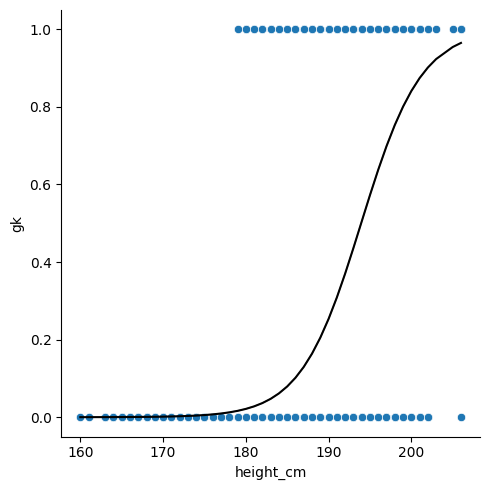
Conclusion
Python definitely has powerful tools for statistics and visualisations! If any of the content here was too challenging, you have other related issues you’d like to discuss or would simply like to learn more, we the technology training team would love to hear from you. You can contact us at training@library.uq.edu.au.
Here’s a summary of what we’ve covered
| Topic | Description |
|---|---|
| Descriptive statistics | Using built-in methods to pandas series (via df["variable"].___ for a dataframe df) we can apply descriptive statistics to our data. |
| Using matplotlib to include statistical information | Using plt.vlines() and plt.fill_between(), we can annotate the plots with lines showing statistically interesting values. |
| Subplotting | The matplotlib functions plt.subplots() and plt.subplot() let us place multiple plots in the same figure. |
| Inferential statistics | Using the scipy.stats and statsmodels modules, we can perform statistical tests and modelling. |